Step by stepধাপে ধাপে
Your shop's home screenদোকানের হোম স্ক্রিন
The Dashboard speaks the language of a shop: Sales, Costs, Profit and Profit margin. At the top, eight buttons do the daily work:ড্যাশবোর্ডে দোকানের ভাষায় দেখায়: বিক্রি, খরচ, লাভ আর লাভের হার। ওপরে আটটি বোতাম প্রতিদিনের কাজ করে:
Sale Baki sale Got baki Purchase Cost Pay supplier Paste SMS Statement
বিক্রি বাকিতে বিক্রি বাকি আদায় মাল কেনা খরচ সাপ্লায়ারকে দিন SMS পেস্ট স্টেটমেন্ট
Below them: the baki khata, your suppliers and this month's purchases. A short getting-started list shows what to do first.নিচে: বাকির খাতা, সাপ্লায়াররা আর এ মাসের মাল কেনা। শুরু করার ছোট তালিকা দেখায় আগে কী করবেন।


Record sales: each one, or once a dayবিক্রি লিখুন: প্রতিটি, বা দিনে একবার
Tap Sale, type the amount and save; it goes into the cash box. Busy shop? Count the cash box at closing and add the day's total as one sale. Both work: choose what you can keep doing. বিক্রি চেপে টাকা লিখে সেভ করুন; ক্যাশ বাক্সে যায়। দোকানে ভিড়? বন্ধের সময় ক্যাশ বাক্স গুনে সারা দিনের মোট একটা বিক্রি হিসেবে দিন। দুটোই চলে: যেটা নিয়মিত পারবেন সেটা করুন।
Paid by bKash or Nagad? Paste the “money received” SMS and it fills itself into your bKash account.বিকাশ বা নগদে পেমেন্ট? “টাকা পেয়েছেন” SMS পেস্ট করুন, বিকাশ অ্যাকাউন্টে নিজেই বসবে।


Baki sale: write who took whatবাকিতে বিক্রি: কে কী নিল লিখুন
Tap Baki sale. Pick the customer (or + New: name, phone, area), type the total, and what they took (“rice 5 kg, oil 1 L”). If they paid part now, type it in Paid now. AmrPotli shows how much they will owe in total. বাকিতে বিক্রি চাপুন। কাস্টমার বেছে নিন (বা + নতুন: নাম, ফোন, এলাকা), মোট টাকা আর কী নিল লিখুন (“চাল ৫ কেজি, তেল ১ লিটার”)। কিছু এখন দিলে “এখন দিয়েছি”-তে লিখুন। মোট কত বাকি হবে আমার পোটলি দেখিয়ে দেয়।
It counts as a sale today, and the unpaid part goes into the customer's baki.আজকের বিক্রি হিসেবে ধরা হয়, আর না দেওয়া অংশটা কাস্টমারের বাকিতে যোগ হয়।
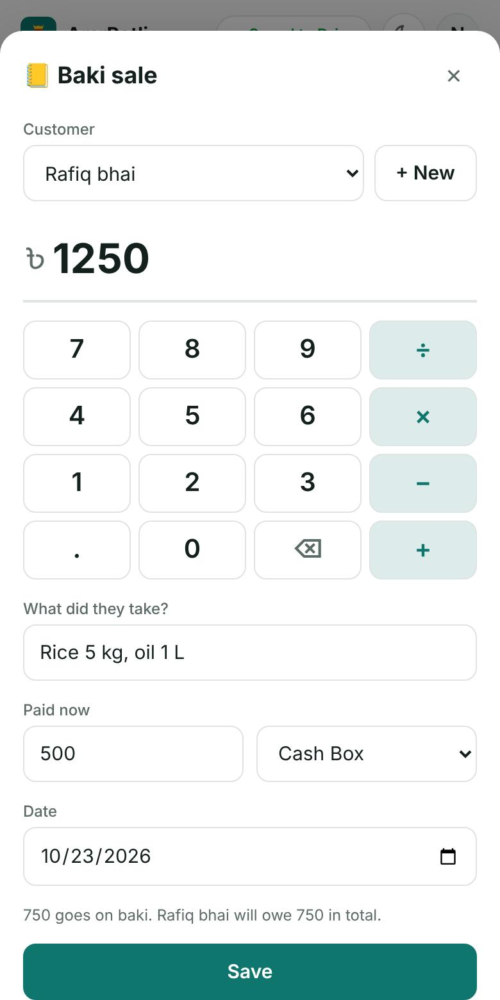
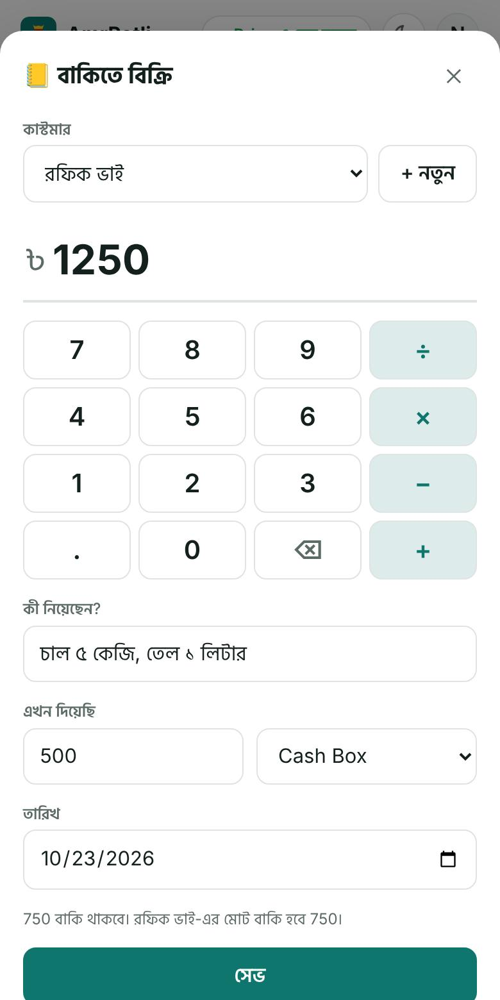
See who owes, and remind them politelyকে কত দেবে দেখুন, ভদ্রভাবে মনে করিয়ে দিন
The Baki khata card lists every customer who owes, biggest first, with the date of their last baki and payment. Tap a name to see their history. বাকির খাতা কার্ডে যারা দেবে সবার তালিকা, বেশি বাকি আগে, শেষ বাকি আর শেষ পেমেন্টের তারিখসহ। নাম চাপলে পুরো ইতিহাস দেখাবে।
- Got payment: when they pay some or all of it back.
- Remind: opens WhatsApp with a polite message and the amount, in Bangla or English, ready to send. Nothing is sent until you tap Send in WhatsApp.
- টাকা পেলাম: কিছু বা পুরোটা শোধ করলে।
- মনে করিয়ে দিন: WhatsApp খুলে বাকির অঙ্কসহ একটা ভদ্র বার্তা তৈরি করে দেয়, বাংলা বা English-এ। WhatsApp-এ Send না চাপা পর্যন্ত কিছু যায় না।


Add your suppliersসাপ্লায়ার যোগ করুন
You buy from different people, and AmrPotli keeps each one's account. Choose who they are:আপনি বিভিন্ন জনের কাছ থেকে কেনেন, আমার পোটলি প্রত্যেকের হিসাব আলাদা রাখে। কে তা বেছে নিন:
- Company: buying straight from PRAN, ACI, Square…
- Distributor: with the company they supply and their area.
- Sales rep (SR): by name, with the company they come from.
- Wholesaler: a shop in the wholesale market, e.g. Moulvibazar or your local bazar.
- কোম্পানি: সরাসরি PRAN, ACI, Square… থেকে কেনা।
- ডিস্ট্রিবিউটর: কোন কোম্পানির আর কোন এলাকার।
- SR (সেলস রিপ): নাম দিয়ে, কোন কোম্পানি থেকে আসেন।
- পাইকার: পাইকারি বাজারের দোকান, যেমন মৌলভীবাজার বা আপনার এলাকার বাজার।
Already owe them? Type the current baki when you add them.আগে থেকেই বাকি আছে? যোগ করার সময় এখনকার বাকিটা লিখে দিন।
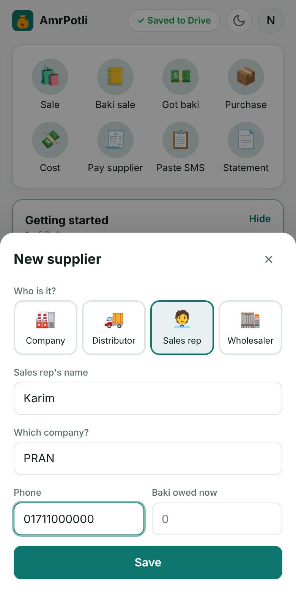
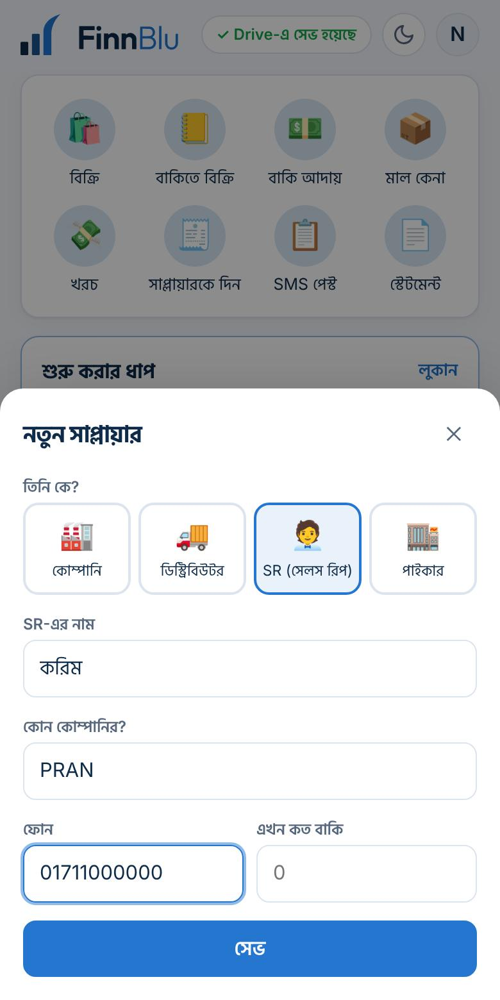
Stock purchase, with the memoমাল কেনা, মেমোসহ
Tap Purchase: choose the supplier, tap what you bought (Biscuits & Snacks, Drinks…) and, if you like, the amount for each; the total adds up. Then: মাল কেনা চাপুন: সাপ্লায়ার বাছুন, কী কিনলেন চাপ দিন (Biscuits & Snacks, Drinks…) আর চাইলে প্রতিটির টাকা; মোট নিজেই যোগ হয়। তারপর:
- Paid now: how much you paid and from where (cash box, bKash). Paid in full or All on baki in one tap. The rest goes on your baki with that supplier.
- Memo no. and a photo of the memo, so you can check it later.
- এখন দিয়েছি: কত দিলেন আর কোথা থেকে (ক্যাশ বাক্স, বিকাশ)। এক চাপে পুরোটা দিয়েছি বা পুরোটা বাকি। বাকিটা ওই সাপ্লায়ারের কাছে আপনার বাকিতে যায়।
- মেমো নং আর মেমোর ছবি, পরে মিলিয়ে দেখার জন্য।
New product? Type it in “Other product” and it joins your list. Change the list any time in Setup → Products you buy.নতুন পণ্য? “অন্য পণ্য”-তে লিখুন, তালিকায় যোগ হয়ে যাবে। Setup → যেসব পণ্য কেনেন থেকে যেকোনো সময় তালিকা বদলান।


Pay suppliers and see what you oweসাপ্লায়ারকে দিন, কত বাকি দেখুন
The Suppliers card shows what you owe each one. Tap Pay supplier (or a supplier's name) when you pay off some baki. “Purchases this month” shows what you bought, by product and by supplier.সাপ্লায়ার কার্ডে দেখায় কাকে কত দেবেন। কিছু বাকি শোধ করলে সাপ্লায়ারকে দিন (বা সাপ্লায়ারের নাম) চাপুন। “এ মাসে মাল কেনা” দেখায় কী কিনলেন, পণ্য আর সাপ্লায়ার অনুযায়ী।
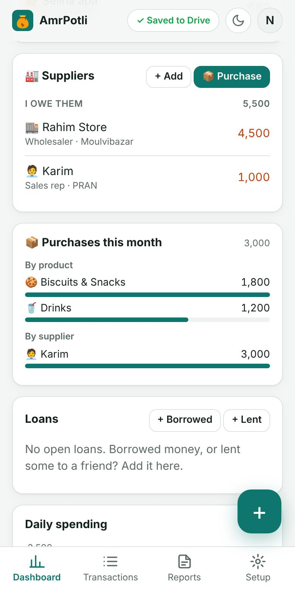
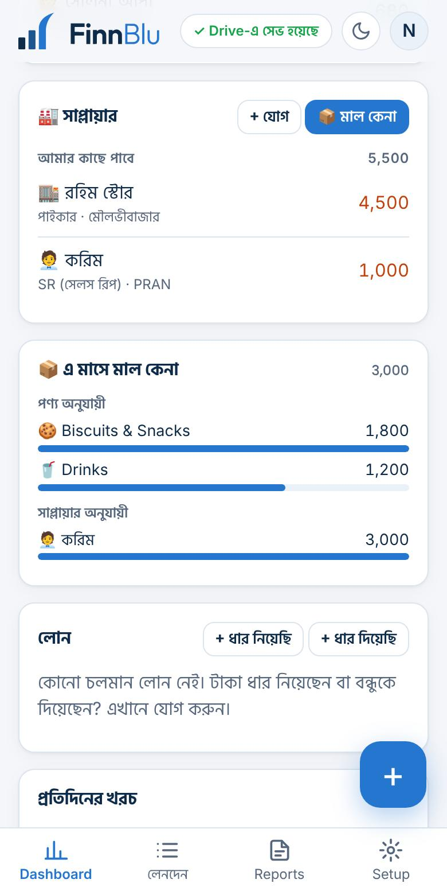
Costs, profit and the monthly statementখরচ, লাভ আর মাসিক স্টেটমেন্ট
Add rent, electricity, staff salary and other costs with Cost. Rent and salary repeat every month: set Repeat once and AmrPotli reminds you.ভাড়া, বিদ্যুৎ, কর্মচারীর বেতন আর অন্য খরচ খরচ দিয়ে লিখুন। ভাড়া আর বেতন প্রতি মাসে: একবার পুনরাবৃত্তি দিলে আমার পোটলি মনে করিয়ে দেবে।
The Dashboard shows Sales, Costs, Profit and Profit margin for the month or week. Statement makes an income and expense document for the bank, a loan or your own records.ড্যাশবোর্ডে মাস বা সপ্তাহের বিক্রি, খরচ, লাভ আর লাভের হার দেখায়। স্টেটমেন্ট দিয়ে ব্যাংক, লোন বা নিজের জন্য আয়-ব্যয়ের কাগজ তৈরি হয়।


Run the shop with helpersসহকারীদের নিয়ে দোকান চালান
Employees, a nephew or family can add sales from their own phone. Go to Setup → Team → Add a helper and write their Gmail. AmrPotli makes a shop book in your Google Drive and Google shares it with them.কর্মচারী, ভাতিজা বা পরিবারের কেউ নিজের ফোন থেকে বিক্রি লিখতে পারেন। Setup → টিম → সহকারী যোগ করুন-এ গিয়ে তাঁর Gmail লিখুন। আমার পোটলি আপনার Google Drive-এ একটি দোকানের খাতা বানায় আর Google সেটি তাঁর সাথে শেয়ার করে।
On their phone the helper opens AmrPotli → Tap to start → For business → A team → Employee or helper → Open the shop book. Every entry shows who added it.সহকারী নিজের ফোনে আমার পোটলি খোলেন → শুরু করতে ট্যাপ করুন → ব্যবসার জন্য → একটি টিম → কর্মচারী বা সহকারী → দোকানের খাতা খুলুন। প্রতিটি এন্ট্রিতে দেখা যায় কে লিখেছেন।
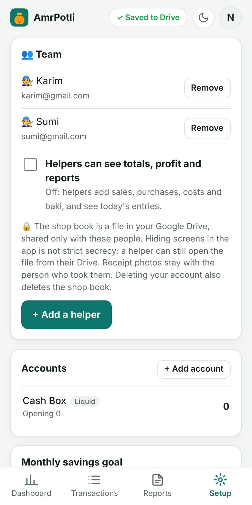
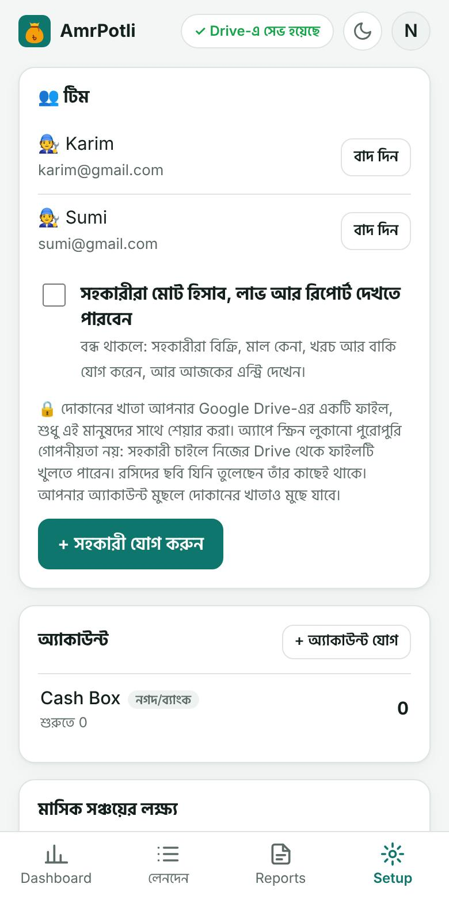
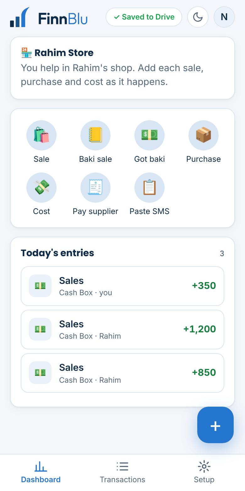
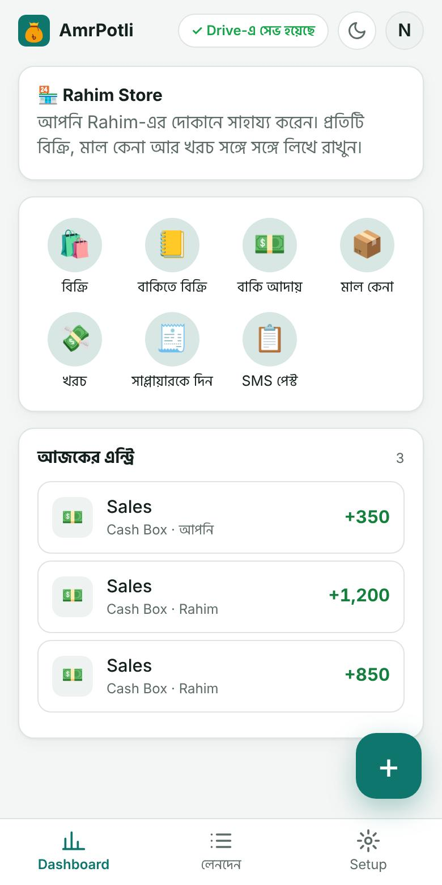
Let Potli watch the numbersহিসাবের দিকে পোটলি নজর রাখে
The “Potli says” card points out what a busy shopkeeper can miss: a customer whose baki is getting old (tap Open to remind them), your best and slowest sales days, and a profit margin that is falling, with the cost that rose most.“পোটলি বলছে” কার্ড ব্যস্ত দোকানদারের চোখ এড়িয়ে যাওয়া কথাগুলো বলে: কোন কাস্টমারের বাকি পুরোনো হয়ে যাচ্ছে (“খুলুন” চেপে তাগাদা দিন), সবচেয়ে ভালো আর ধীর বিক্রির দিন, আর লাভের হার কমলে কোন খরচ সবচেয়ে বেশি বেড়েছে।
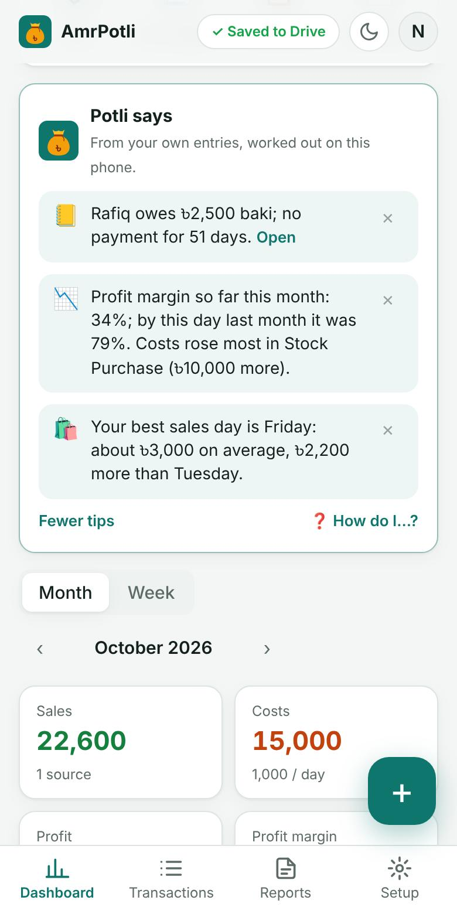
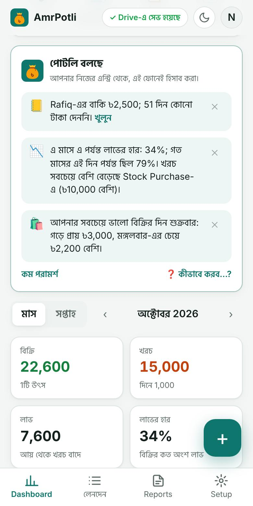